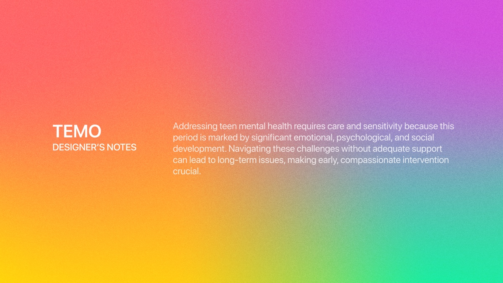
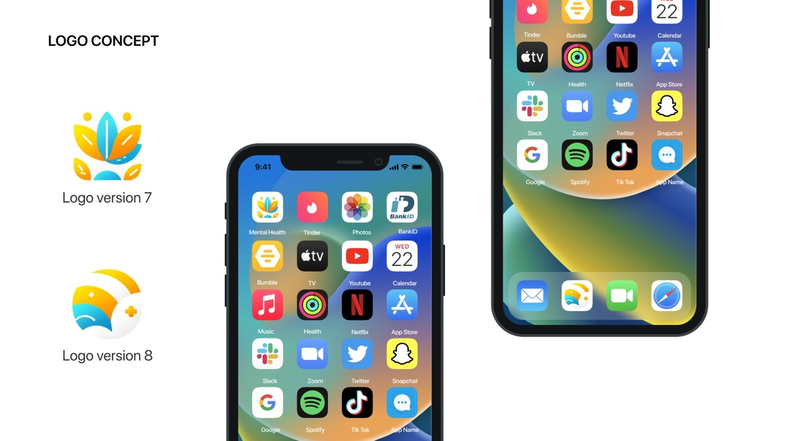
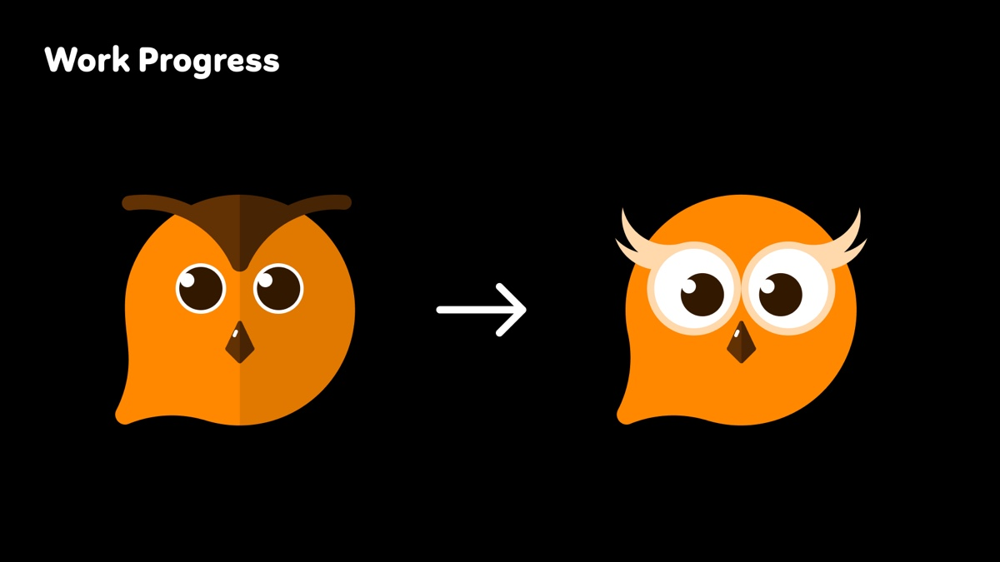
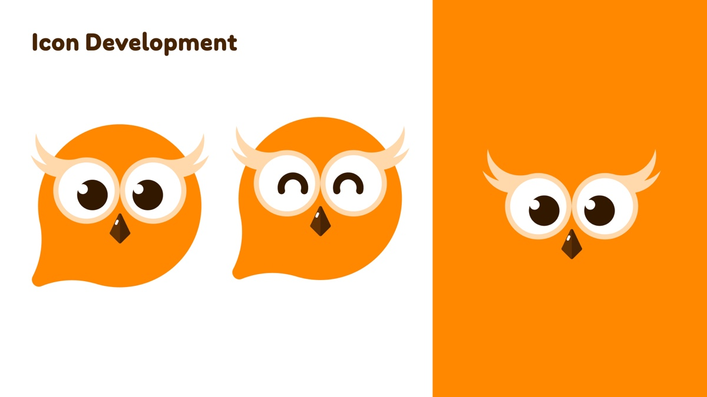
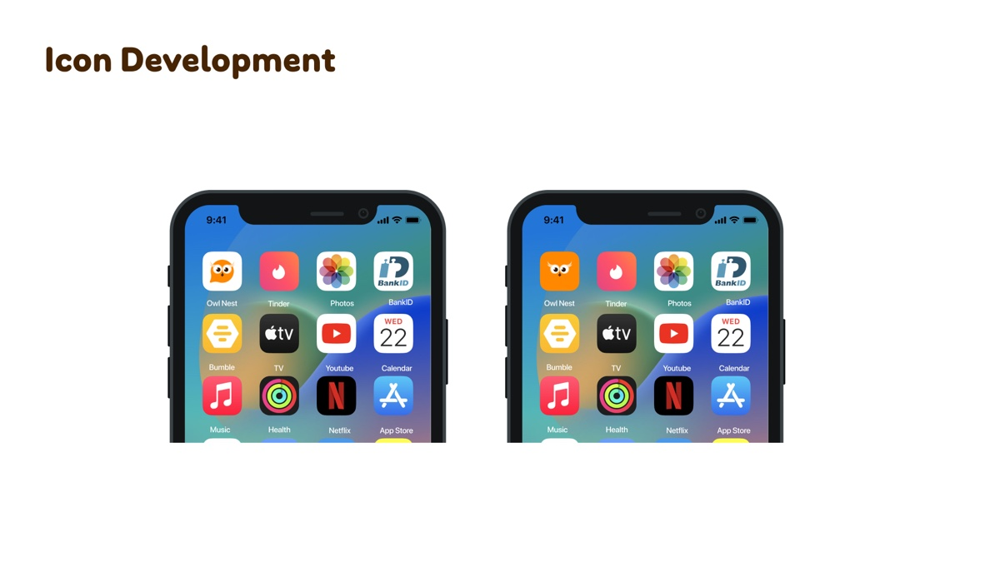
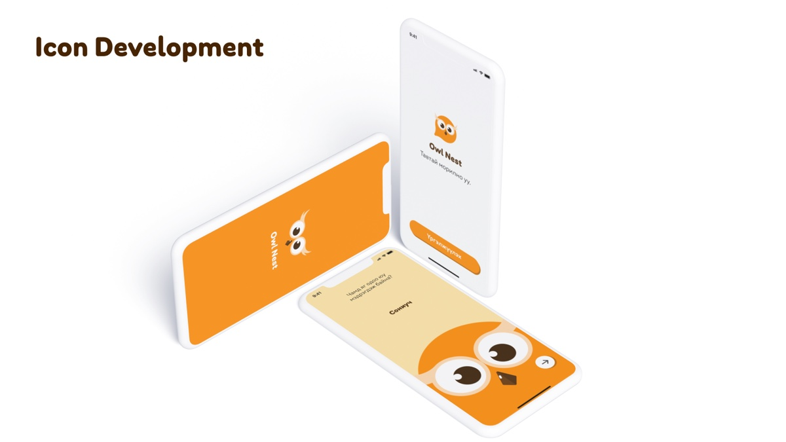

Owl Nest mental health app brand identity
2024
A mental health app for teenagers, and an icon I had to make sit on a teenager’s home screen between Tinder and Netflix without telling anyone what it is. My first round was called Mental Health and looked like it. The second became Owl Nest.
The brief, in nine words
I opened the deck by pinning the brief down in nine words before I drew anything. Five concepts: connectivity, support, growth, comfort, guidance. Four feelings: hope, support, optimism, positivity. Then I wrote two design principles, and the second one ended up steering the whole project: simple shapes and warm colour, to work against the stigma attached to mental health rather than with it.

Halfway through the deck I put in a page of my own notes, signed, on a gradient. I wrote that adolescence is a stretch of heavy emotional, psychological and social change, that getting through it without support does lasting damage, and that early, compassionate help is worth the effort.
I put it there on purpose. I wanted the client to see that I had understood who the app was for before I asked them to judge a single mark, and I wanted every mark that followed to be read against that paragraph rather than against the others.
Every candidate on a real phone

I presented every candidate already installed, in the top-left slot of an iPhone home screen, surrounded by Tinder, Bumble, Snapchat, TikTok, Netflix, Spotify and Health.
I built the deck that way because the home screen is where the icon actually gets judged. A teenager’s phone gets handed to a friend, left face up on a desk, picked up by a parent who wants to see a photo. I was not designing a logo for a letterhead. I was designing a small square that other people would read without being invited to.
An app icon for a teenager is not really seen by the teenager. It is seen by whoever is looking over their shoulder.
Stage one was called Mental Health
My first round ran past eight numbered versions and stayed in the vocabulary every wellness product reaches for: layered petals opening like a lotus, a sun coming up over water, gradients from teal to yellow. On the home screen I labelled the app Mental Health.
On paper that answered the brief. On the phone it failed the test I had set up on the same slide. A lotus between Snapchat and TikTok read as exactly what it was, and the label removed whatever doubt was left. My own second principle asked the work to counteract the stigma around mental health, and I had named the app after the condition. I scrapped the round.
An owl that is not judging you
For the second round I changed the name to Owl Nest and the mark to an owl, then spent most of my time on one problem.

My first owl had dark angular brows, narrow eyes and a hard two-tone split down the face. It looked severe, and when I worked out why, the reason was structural rather than stylistic. An owl means wisdom, and wisdom drawn quickly turns into judgment. That is the worst possible expression for a product whose entire job is getting somebody to admit they are struggling.
So I kept the species and threw away the attitude. I turned the brows into pale feather tufts that sit above the eyes rather than over them, made the eyes wide and round until they took up half the face, and dropped the two-tone split so the head stopped reading as a frown. The first owl was looking at you. The second one is listening.
I also gave the silhouette a second job. A rounded body with a single point pulled out of the bottom left reads as an owl and as a speech bubble. For a product that needs a teenager to say something first, I wanted that double reading built into the shape.
An icon with expressions

I did not stop at one lockup. I gave the owl states: eyes open, eyes shut into two contented arcs, and a version with the body dropped away so only the tufts, eyes and beak survive on a flat orange field.
I did that because the app needed a character more than a logo. It needed something to put in the empty state, something to show while it waits, and something that can respond when a user finishes a session. One owl cannot do that. An owl with a face that changes can.
I held it to four colours and let the orange be the only loud one. Everything that is not the owl stays pale, so on any screen the warmest object is the bird.
What it does not say

Back on the home screen the app is called Owl Nest and the icon is an owl. A friend picking up the phone sees a bird. Nothing on that screen says therapy, or anxiety, or help, which is exactly what I set out to achieve.

I carried the same restraint into the app. The owl arrives at the edge of a card rather than centred in it, so it reads as company rather than an announcement, and the copy is in Mongolian because the users are.
The whole identity is built around a negative requirement, and that is the most useful thing I took away from it. Most brands ask to be recognised. This one had to be unremarkable to everybody except the person who installed it, because the audience is teenagers who mostly cannot ask for help out loud, and an icon that outs them is worse than no app at all.